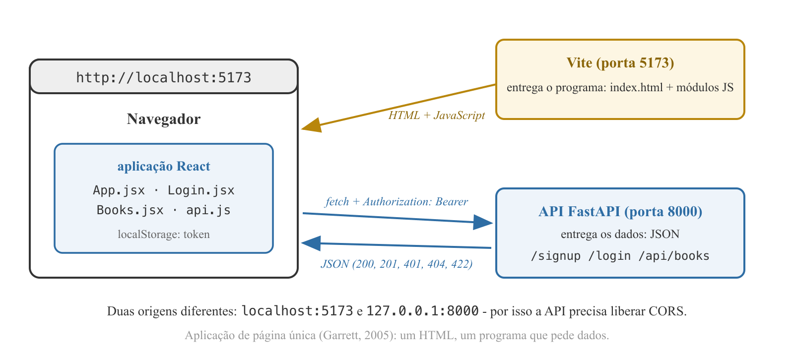
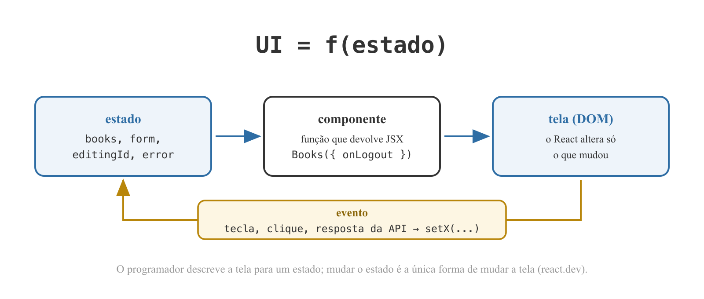
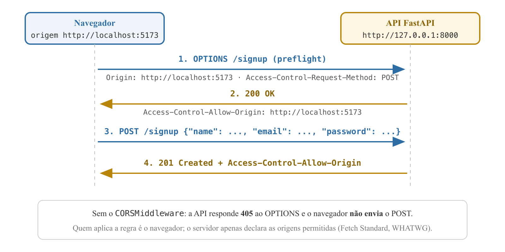
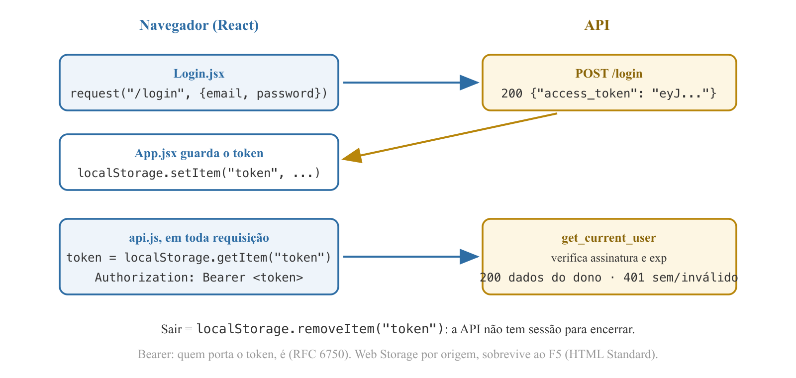

Programação Avançada - Aula 06
Universidade Unirios
Cadastro, login e o CRUD de Books autenticado estão prontos - e para usá-los uma pessoa precisaria escrever requisições HTTP à mão, copiar o token e montar o header.
books não guarda nenhum dos dois números.Primeiro os dados (páginas e progresso, no backend); depois a interface (React) que os exibe.
Book com pages e current_page e expor o Reading Progress como dado derivado;useState, useEffect e props;CORSMiddleware;fetch: cadastro, login e o CRUD de Books, com o token no localStorage e no header Authorization: Bearer.O navegador carrega um único documento HTML e um programa que, de forma assíncrona, pede dados ao servidor e atualiza a tela - sem recarregar a página.
GARRETT, J. J. - Ajax: A New Approach to Web Applications, 2005

GARRETT, J. J. - 2005 · Documentação oficial do Vite - vite.dev
"The library for web and native user interfaces." - react.dev
Documentação oficial do React - react.dev (Thinking in React)

Documentação oficial do React - react.dev (Managing State)
useState): o valor cuja mudança redesenha o componente;useEffect): código que roda depois de desenhar - o lugar de buscar dados quando a tela aparece;Documentação oficial do React - react.dev (Describing the UI)
| No backend (Python) | No frontend (Node) |
|---|---|
| interpretador Python | Node.js (Ryan Dahl, 2009) - JavaScript fora do navegador |
pip + requirements.txt | npm + package.json (e o package-lock.json fixa versões) |
.venv/ | node_modules/ |
uvicorn --reload | Vite (Evan You, 2020): servidor de desenvolvimento e build |
p-2, rounded, bg-blue-600); o estilo é composto no JSX e o build inclui só as classes usadas.vite.dev · tailwindcss.com · docs.npmjs.com
useState muda e redesenha; useEffect roda depois de desenhar;
class Book(Base):
__tablename__ = "books"
id: Mapped[int] = mapped_column(primary_key=True)
name: Mapped[str] = mapped_column(String(255))
pages: Mapped[int]
current_page: Mapped[int]
user_id: Mapped[int] = mapped_column(ForeignKey("users.id"))
created_at: Mapped[datetime] = mapped_column(server_default=func.now())
@property
def progress(self) -> int:
return round(self.current_page * 100 / self.pages)
Mapped[int] sem mapped_column: o tipo Python basta - vira INTEGER NOT NULL;progress é property, não coluna: calculada a cada leitura, nunca desatualizada. Concluído = 100%, sem campo de status.
class BookCreate(BaseModel):
name: str = Field(min_length=1, max_length=255)
pages: int = Field(gt=0)
current_page: int = Field(default=0, ge=0)
@model_validator(mode="after")
def check_current_page(self):
if self.current_page > self.pages:
raise ValueError("current_page must not exceed pages")
return self
Field(gt=0) e Field(ge=0): regras de um campo só; default=0 - cadastrar um livro é começar a lê-lo;@model_validator(mode="after"): regra entre dois campos, depois da validação individual; o ValueError vira 422 com a mensagem.Documentação oficial do Pydantic - docs.pydantic.dev (Validators)
class BookRead(BaseModel):
model_config = ConfigDict(from_attributes=True)
id: int
name: str
pages: int
current_page: int
progress: int
user_id: int
from_attributes=True, o Pydantic lê book.progress como lê book.name - coluna ou property, tanto faz;models.Book(name=..., pages=book.pages, current_page=book.current_page, user_id=...) no POST; os três atributos no PUT.| Requisição | Resposta |
|---|---|
POST /api/books {"name": "Dom Casmurro", "pages": 300} | 201 - current_page: 0, progress: 0 |
PUT /api/books/1 com current_page: 120 | 200 - progress: 40 |
PUT /api/books/1 com current_page: 400 | 422 - current_page must not exceed pages |
DROP TABLE books; no cliente mysql - o model ganhou colunas e o create_all não altera tabela existente. Dado de aula é descartável.Mac e Windows (dentro de projeto/, ao lado de backend/)
npm create vite@latest frontend -- --template react
cd frontend
npm install
npm install tailwindcss @tailwindcss/vite
create-vite gera o esqueleto; o npm install lê o package.json e cria node_modules/;install grava o Tailwind no package.json - o pip install que já escreve no requirements.txt;vite.config.js
import react from "@vitejs/plugin-react";
import tailwindcss from "@tailwindcss/vite";
import { defineConfig } from "vite";
export default defineConfig({
plugins: [react(), tailwindcss()],
});
src/index.css
@import "tailwindcss";
Apague a demonstração: App.css, src/assets/, public/icons.svg, o README.md gerado.
import { StrictMode } from "react";
import { createRoot } from "react-dom/client";
import "./index.css";
import App from "./App.jsx";
createRoot(document.getElementById("root")).render(
<StrictMode>
<App />
</StrictMode>,
);
index.html tem uma div#root vazia e um <script type="module" src="/src/main.jsx">; tudo que aparece é o React desenhando dentro dela;StrictMode: em desenvolvimento, executa os efeitos duas vezes para denunciar código que dependa de rodar uma só - cada listagem aparece em dobro no uvicorn.
export default function App() {
return <h1 className="p-8 text-2xl font-bold">Reading Tracker</h1>;
}
Mac e Windows (dentro de projeto/frontend)
npm run dev
export default é o que o main.jsx importa;className, não class: JSX é JavaScript, e class é palavra reservada;http://localhost:5173. Troque o texto e salve: a tela muda sem recarregar.
const API_URL = "http://127.0.0.1:8000";
export async function request(path, { method = "GET", body } = {}) {
const headers = { "Content-Type": "application/json" };
const token = localStorage.getItem("token");
if (token) {
headers["Authorization"] = `Bearer ${token}`;
}
const response = await fetch(API_URL + path, {
method,
headers,
body: body ? JSON.stringify(body) : undefined,
});
fetch: a função do navegador para HTTP; async/await como no Python - espera sem travar a tela;localStorage a cada requisição e vai no header - o que o botão Authorize do Swagger montava.
if (response.status === 204) {
return null;
}
const data = await response.json();
if (!response.ok) {
const error = new Error(
Array.isArray(data.detail) ? data.detail[0].msg : data.detail,
);
error.status = response.status;
throw error;
}
return data;
}
json() nele quebraria;detail é texto nas HTTPException e uma lista no 422 (o msg do campo inválido); error.status guarda o código HTTP.
export default function Signup({ onDone }) {
const [name, setName] = useState("");
const [email, setEmail] = useState("");
const [password, setPassword] = useState("");
const [error, setError] = useState("");
async function handleSubmit(event) {
event.preventDefault();
try {
await request("/signup", { method: "POST", body: { name, email, password } });
onDone();
} catch (err) {
setError(err.message);
}
}
{ onDone } é uma prop: o pai decide o que acontece depois do cadastro;preventDefault() impede o formulário HTML de recarregar a página - o que destruiria a aplicação.
<form onSubmit={handleSubmit} className="mx-auto mt-16 max-w-sm space-y-3">
<h1 className="text-2xl font-bold">Sign up</h1>
<input className="w-full rounded border p-2" placeholder="Name"
value={name} onChange={(e) => setName(e.target.value)} />
...
{error && <p className="text-red-600">{error}</p>}
<button className="w-full rounded bg-blue-600 p-2 text-white">Create account</button>
<button type="button" className="w-full text-blue-600" onClick={onDone}>
I already have an account
</button>
</form>
setName; o estado muda; o componente redesenha; o input mostra o valor novo;{error && ...}: expressão JavaScript entre chaves - com error vazio, nada é desenhado;type, o botão é o submit; type="button" não submete.
Access to fetch at 'http://127.0.0.1:8000/signup' from origin
'http://localhost:5173' has been blocked by CORS policy: Response to
preflight request doesn't pass access control check: No
'Access-Control-Allow-Origin' header is present on the requested resource.
E no terminal do uvicorn, uma linha que ninguém escreveu:
"OPTIONS /signup HTTP/1.1" 405 Method Not Allowed
O navegador enviou uma requisição própria, a API a recusou e o POST nunca saiu. Cada palavra do erro tem nome.
Dois URLs têm a mesma origem quando esquema, host e porta coincidem - a tripla que identifica de onde um documento veio.
http://localhost:5173 e http://127.0.0.1:8000 diferem duas vezes - host e porta. Bastaria uma.RFC 6454 - The Web Origin Concept, IETF, 2011
curl, o Swagger e um script Python não a consultam.MDN Web Docs - Same-origin policy
Cross-Origin Resource Sharing: o mecanismo pelo qual o servidor declara, por headers de resposta, quais origens podem ler suas respostas.
Access-Control-Allow-Origin: http://localhost:5173. Sem o header, ou com outra origem, o navegador descarta a resposta - foi o que o erro disse.W3C - Cross-Origin Resource Sharing, 2014 · WHATWG - Fetch Standard

WHATWG - Fetch Standard (CORS protocol)
| Política de mesma origem | CORS | |
|---|---|---|
| Quem define | o navegador | o servidor, por headers |
| O que faz | bloqueia leitura entre origens | libera origens específicas |
| Quem protege | o usuário do navegador | (relaxa a proteção com critério) |
| Vale fora do navegador? | não | não |
"*" numa API com token.OPTIONS antes de métodos e headers não triviais;
from fastapi.middleware.cors import CORSMiddleware
app.add_middleware(
CORSMiddleware,
allow_origins=["http://localhost:5173"],
allow_methods=["*"],
allow_headers=["*"],
)
Access-Control-Allow-* em toda resposta a uma origem permitida;OPTIONS /signup 200 seguido de POST /signup 201. Repetir o cadastro mostra Email already registered em vermelho - o 409 chegou ao usuário.127.0.0.1:5173 em vez de localhost:5173 traz o erro de volta: origens diferentes, só uma na lista."A security token with the property that any party in possession of the token (a 'bearer') can use the token in any way that any other party in possession of it can."
Authorization: Bearer <token>;RFC 6750 - Bearer Token Usage, IETF, 2012
setItem, getItem, removeItem;WHATWG - HTML Standard, Web storage · MDN - Window: localStorage
Cookie HttpOnly | localStorage + header | |
|---|---|---|
| Quem envia | o navegador, sozinho | o nosso JavaScript, explícito |
| Legível por script? | não | sim |
| Risco principal | CSRF | XSS |
| Funciona entre origens? | com restrições | sim |
localStorage: se um atacante injetar JavaScript (XSS), lê o token;exp.OWASP - HTML5 Security Cheat Sheet (Local Storage)

RFC 6750 - 2012 · WHATWG - HTML Standard
Authorization: Bearer - quem porta, é (RFC 6750);localStorage: por origem, sobrevive ao F5, enviado só pelo nosso código;
export default function Login({ onLogin, onShowSignup }) {
const [email, setEmail] = useState("");
const [password, setPassword] = useState("");
const [error, setError] = useState("");
async function handleSubmit(event) {
event.preventDefault();
try {
const data = await request("/login", { method: "POST", body: { email, password } });
onLogin(data.access_token);
} catch (err) {
setError(err.message);
}
}
Mesma anatomia do cadastro; a diferença é que a resposta interessa. O componente não guarda o token: guardar e escolher a próxima tela é de quem conhece as telas.
export default function App() {
const [token, setToken] = useState(localStorage.getItem("token"));
const [showSignup, setShowSignup] = useState(false);
function handleLogin(newToken) {
localStorage.setItem("token", newToken);
setToken(newToken);
}
function handleLogout() {
localStorage.removeItem("token");
setToken(null);
}
if (token) {
return <Books onLogout={handleLogout} />;
}
if (showSignup) {
return <Signup onDone={() => setShowSignup(false)} />;
}
return <Login onLogin={handleLogin} onShowSignup={() => setShowSignup(true)} />;
}
localStorage: o F5 mantém o login. handleLogin guarda e muda o estado - um sem o outro não bastaria;return condicionais: UI = f(estado) na forma mais literal.
export default function Books({ onLogout }) {
const [books, setBooks] = useState([]);
const [form, setForm] = useState(emptyForm);
const [error, setError] = useState("");
useEffect(() => {
loadBooks();
}, []);
async function loadBooks() {
try {
setBooks(await request("/api/books"));
} catch (err) {
setError(err.message);
}
}
function handleChange(event) {
setForm({ ...form, [event.target.name]: event.target.value });
}
useEffect(..., []): roda depois do primeiro desenho, uma vez. Buscar fora do efeito dispararia uma requisição a cada redesenho;handleChange para três inputs: o name do input é a chave; { ...form } cria um objeto novo - só assim o React redesenha.
<ul className="space-y-3">
{books.map((book) => (
<li key={book.id} className="rounded border p-3">
<strong>{book.name}</strong>
</li>
))}
</ul>
map transforma a lista de dados em lista de elementos; o key é a identidade de cada item - o id do banco serve exatamente para isso;type="number": Number(form.pages) antes de enviar;loadBooks() de novo: a lista vem da API, a fonte da verdade.localStorage.getItem("token") mostra o JWT; após Log out, null.
fetch("http://127.0.0.1:8000/api/books/1", {
method: "DELETE",
headers: { Authorization: "Bearer " + localStorage.getItem("token") },
}).then((r) => console.log(r.status));
localStorage), a segunda usuária vê a lista vazia;
const [editingId, setEditingId] = useState(null);
if (editingId === null) {
await request("/api/books", { method: "POST", body });
} else {
await request(`/api/books/${editingId}`, { method: "PUT", body });
}
function startEditing(book) {
setEditingId(book.id);
setForm({ name: book.name, pages: book.pages, current_page: book.current_page });
}
async function handleDelete(id) {
await request(`/api/books/${id}`, { method: "DELETE" });
loadBooks();
}
editingId nulo é "criando"; com id, "editando" - muda o verbo e a URL, não o formulário. O botão diz Add book ou Save;onClick={() => handleDelete(book.id)}: a seta adia a chamada para o clique; sem ela, executaria durante o desenho.
<div className="flex justify-between">
<strong>{book.name}</strong>
<span className="text-sm text-gray-600">
{book.current_page}/{book.pages} pages · {book.progress}%
</span>
</div>
<div className="mt-2 h-2 rounded bg-gray-200">
<div className="h-2 rounded bg-green-600" style={{ width: `${book.progress}%` }} />
</div>
div: fundo cinza e barra verde cuja largura é a porcentagem - o único estilo que vem de um dado, não de uma classe;book.progress veio pronto da API: a tela não recalcula. Se a regra mudar, muda no model;Books.jsx, trate o 401: quando err.status === 401, chame onLogout() em vez de mostrar a mensagem;localStorage.setItem("token", "abc") e F5 - a aplicação deve voltar sozinha ao login.error.status do api.js existe para isso. Atenção: tratar o 401 dentro do próprio api.js quebraria o login com senha errada, que também é 401 - a decisão pertence a quem sabe em que tela está.pages e current_page; o Reading Progress é dado derivado - property no model, publicada pelo BookRead, nunca armazenada;useState para o que muda, useEffect para buscar dados, props para conversar com o pai; Vite serve e empacota, Tailwind estiliza no JSX, npm gerencia como o pip;OPTIONS explicando a linha inesperada;localStorage e viaja em Authorization: Bearer (RFC 6750) - custo assumido do XSS, defesa da vida curta;